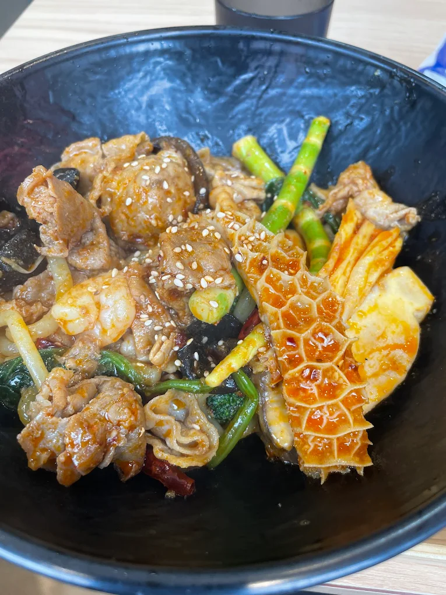
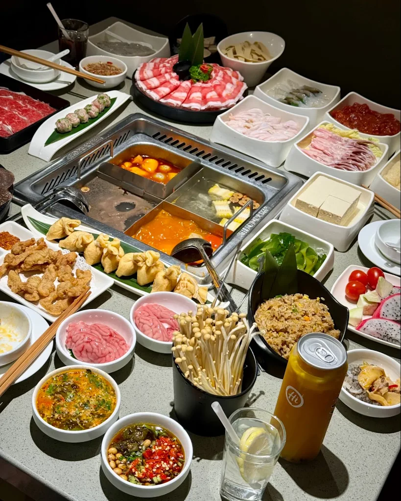

四川料理の世界
四川料理は中国四大料理の一つで、「一菜一格、百菜百味（料理ごとに個性があり、百の料理には百の味わいがある）」と称される豊かな食文化を持っています。盆地特有の気候から麻辣（唐辛子の辛さと花椒のしびれ）を効かせた独自の味が発展し、国内外の多くの人々に愛される深みのあるメニューが魅力です。

代表的な料理
エビや肉、たっぷりの野菜をスパイスや花椒とともに強火でピリ辛に炒め合わせた汁なし鍋料理です。食材の旨味が凝縮されたクセになる強烈な辛さと香ばしさが魅力です。

唐辛子や花椒が効いた真っ赤なスープと、鶏骨や豚骨ベースの白湯スープを同時に味わえる中国の伝統的な鍋料理です。肉や野菜をしゃぶしゃぶのように潜らせて食べ、体の芯から温まります。

柔らかく茹でた鶏肉に、芝麻醤（練りごま）やラー油などを合わせたコクのあるピリ辛ダレをたっぷりかけた前菜料理です。ごまの芳醇な香りと爽やかな辛さが絶妙なバランスです。

もち米や米粉で作られた、ひんやりとした口当たりの伝統的な涼菓（スイーツ）です。黒糖や特製の甘いシロップをかけて食べることが多く、辛い料理を食べた後のデザートにぴったりです。

白キクラゲを氷砂糖やクコの実などと一緒にじっくり煮込んだ、優しい甘さの伝統的デザートスープです。トロッとした食感で美容や健康にも良いとされ、広く愛されています。

味の特徴
唐辛子や様々なスパイスを多用し、鮮やかな赤色と食欲をそそる香りが特徴。
四川料理の中ある6つの辛味
- 麻辣（マーラー）花椒を使ったしびれと辛み。
- 香辣（シャンラー）花椒と唐辛子の香りが強い辛さ。
- 糊辣（フーラー）唐辛子を炒め焦がした辛さ。
- 糟辣（ザオラー）糟漬け唐辛子の辛さ。
- 酸辣（スアンラー）酸っぱ辛い。
- 鮮辣（シェンラー）生の青唐辛子を使った辛さ。
四川料理の歴史
1. 古代・三国時代の起源（〜唐代）
四川料理の歴史は、春秋戦国時代の「巴国」や「蜀国」の時代から始まりました。豊かな穀倉地帯であり「天府の国」と呼ばれたこの地域では、早い段階から豊富な食材と調味料を用いた調理技術が発展しました。三国時代には食材の下処理や調理法がほぼ確立され、唐の時代には宮廷料理としても知られるようになりました。
2. 唐辛子の伝来と「麻辣（マーラー）文化」（17世紀〜）
現在の四川料理の代名詞である「辛さ」は、明朝末期から清朝初期にかけての大航海時代にもたらされました。南米原産の唐辛子が伝来すると、元々四川省に自生していた山椒（花椒）の「麻（しびれ）」と結びつき、四川料理特有の刺激的な味わいである「麻辣（マーラー）」が誕生・発展していきました。
3. 多様な味覚の融合と近代（清朝〜現代）
四川省は山に囲まれた盆地で、湿気が高く夏は非常に蒸し暑い気候です。唐辛子や香辛料を多用する食文化は、発汗を促し健康を維持するための人々の知恵として定着しました。麻辣だけでなく、酸（酸味）、甜（甘味）、咸（塩味）など多彩な味を組み合わせるスタイルが完成しました。
日本の四川料理との比較
19世紀末から20世紀初頭にかけて本格化した中華料理は、日本人の味覚に合わせ、油分を控え、辛味を和らげ、身近な食材を用いる形へと変化していった。 その結果、中国の麺料理をルーツに持つラーメンや、茹でるのではなく焼いて副菜として楽しまれる餃子、味噌を用いて辛味と香辛料の刺激を和らげた麻婆豆腐など、日本独自のスタイルを持つ定番料理が誕生した。